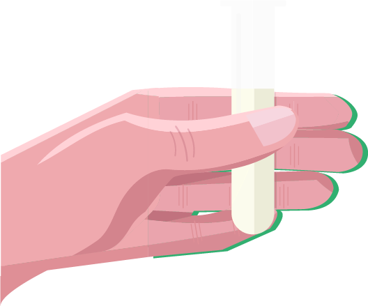

Wat is IVF
In-vitrofertilisatie (IVF) is een meer ingrijpende procedure dan IUI. Het is pas na een zekere periode van onvruchtbaarheid en na een mislukte chirurgische of medicamenteuze behandeling dat IVF een optie wordt voor sommige koppels.
